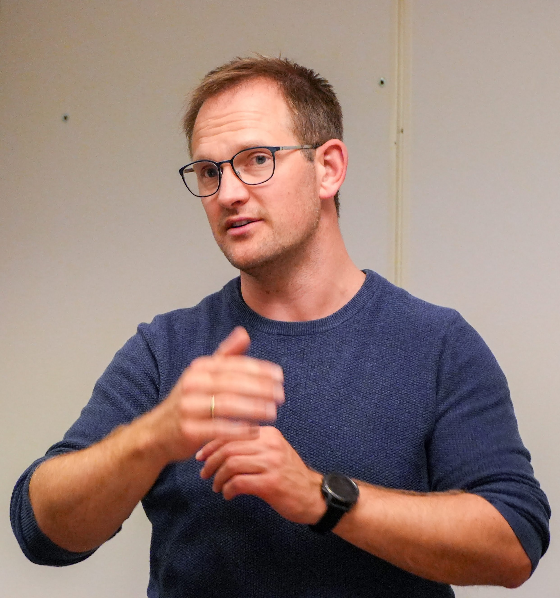

Forside
Velkommen til emnet
IS-930 Introduksjon til Geografisk IT og Kunstig Intelligens
Videreutdanningskurs høst 2026 · 2.5 studiepoeng · Introduksjon
I dette emnet lærer du hvordan geografiske data samles inn, lagres, analyseres og visualiseres, og hvordan kunstig intelligens kan brukes til å hente ut ny kunnskap fra dem. Vi jobber praktisk med kartdata, romlig analyse og maskinlæring, og du får erfaring med verktøyene som brukes i bransjen i dag. Emnet passer for deg som vil forstå hvordan kart, data og KI henger sammen, uten å trenge forkunnskaper i GIS.
Kom i gang på tre steg
- Bli med på introduksjonswebinaret tirsdag 6. oktober kl. 09:00–11:00 (Zoom-lenke i semesterplanen under).
- Skaff læreboken og installer programvare (se Praktisk informasjon).
- Sjekk at du har tilgang til Canvas og Zoom, og ta en titt på modulsidene.
 Alexander S. Nossum Emneansvarlig og førsteamanuensis |
Hei, og velkommen! Jeg er emneansvarlig og foreleser i IS-930. Mitt mål er at emnet skal være praktisk og relevant, med eksempler fra virkelige data og problemstillinger. Del gjerne spørsmål og tilbakemeldinger underveis, enten i diskusjonsforumet eller direkte til meg. Kontakt meg på epost eller telefon: +47 41 29 26 32 |
Semesterplan
Endringer kan forekomme og vil bli annonsert – høst 2026
| Dato | Dag og tidspunkt | Aktivitet | Temaside | Zoom-rom |
|---|---|---|---|---|
| Okt. uke 41 | Tirsdag 6. oktober, kl. 09:00–11:00 |
Digitalt introduksjonswebinar – orientering | LINK | Zoom |
| Okt. uke 43 | Torsdag 22. oktober, kl. 09:15–13:00 |
Samling 1 – Introduksjon til geografisk IT | LINK | Zoom |
| Nov. uke 45 | Tirsdag 3. november, kl. 09:15–13:00 |
Samling 2 – Teknologi og databehandling | LINK | Zoom |
| Nov. uke 46 | Torsdag 12. november, kl. 10:15–13:00 |
Digital veiledning | Zoom | |
| Nov. uke 46 | Søndag 15. november, kl. 23:59 |
Innleveringsfrist refleksjonsoppgave | LINK | |
| Nov. uke 47 | Tirsdag 17. november, kl. 09:15–13:00 |
Samling 3 – Analyse og KI | LINK | Zoom |
| Nov. uke 48 | Tirsdag 24. november, kl. 10:15–13:00 |
Digital veiledning | Zoom | |
| Des. uke 49 | Søndag 6. desember, kl. 23:59 |
Innleveringsfrist mappeinnlevering | LINK |
Modulsider og forelesninger
Det faglige innholdet er organisert i moduler i Canvas. Hver modul følger en samling og inneholder forberedelser, forelesningsmateriell, oppgaver og lenker til opptak.
| Modul | Tema | Samling | Forelesning |
|---|---|---|---|
| Modul 1 | Introduksjon til geografisk IT Geografiske datakilder, norske økosystem, formater, API-standarder, visualiseringsmetoder |
22. oktober | Til modul 1 |
| Modul 2 | Teknologi og databehandling Arkitektur, teknologi, verktøy, biblioteker, databehandling, GIS-agenter |
3. november | Til modul 2 |
| Modul 3 | Analyse og KI Romlig analyse, ruteberegning, GIS-agenter, KI-vurderinger, sikkerhet og KI |
17. november | Til modul 3 |
Opptak fra samlingene publiseres i Canvas etter samlingen.
Praktisk informasjon
Heldigitalt kurs
Kurset gjennomføres helt digitalt. Samlinger, webinar og veiledning holdes i Zoom, og all diskusjon utenom samlingene foregår fortrinnsvis i diskusjonsforumet i Canvas. Zoom-lenker finner du i semesterplanen over. Du trenger en stabil nettforbindelse, mikrofon og helst kamera. Vi legger opp til aktiv diskusjon og gruppearbeid under samlingene.
Canvas
Canvas er den digitale læringsplattformen i emnet. Her finner du:
- Modulsider med forberedelser, forelesningsmateriell og opptak (se lenker i tabellen over)
- Oppgaver og innlevering av refleksjonsoppgave og prosjektskisse
- Diskusjonsforum for spørsmål og faglig dialog
- Kunngjøringer om endringer i planen. Sjekk at varsler er skrudd på i Canvas-profilen din.
Pensum
Pensum består av læreboken (se under) og supplerende materiell som ligger på modulsidene i Canvas.
Lærebok
GIS – Verktøy for å forstå verden
Forfatter: Jan Ketil Rød · Fagbokforlaget
Vurdering og arbeidskrav
Vurderingsform er mappeinnlevering. Mappeinnleveringen består av prosjektoppgaven og refleksjonsoppgaven (i uke 46). Vurderingsform er bestått/ikke bestått.
- Refleksjonsoppgave – frist i uke 46
- Mappeinnlevering – frist i uke 49
Ofte stilte spørsmål (FAQ)
Trenger jeg forkunnskaper i GIS eller programmering?
Nei. Emnet er en introduksjon og passer for deg som ikke har jobbet med GIS eller KI før.
Er det obligatorisk å delta på samlingene?
Samlinger er i utgangspunktet obligatorisk. Det vil være gruppearbeid og diskusjoner som ikke vil bli tatt opp eller kan gjøres i etterkant. Er du forhindret fra å delta må du sende en epost i forkant.
Hvilken programvare trenger jeg?
Vi kommer til å være innom flere programvarer og verktøy som er anbefalt å installere på egen maskin for å prøve ut. Dette innebærer blant annet QGIS og GDAL i tillegg til KI-verktøy. Anbefaling for kurset er Claude med Pro subscription. Detaljer og veiledning for installasjon og oppsett finner du på modulsiden.
Hvordan leverer jeg oppgavene?
Begge oppgavene leveres i Canvas under «Oppgaver». Husk å levere før fristen i semesterplanen.
Hva om jeg ikke rekker en frist eller blir syk?
Ta kontakt med meg så tidlig som mulig, og senest før fristen for innleveringer.
Hvordan vurderes emnet?
Mappeinnlevering bestående av refleksjonsoppgave og prosjektskisse. Vurderingsform: Bestått / ikke bestått.
Vurderingen baseres på om innleveringene samlet viser tilstrekkelig forståelse for geografisk IT og KI, og om prosjektskissen er realistisk og faglig begrunnet. Det stilles ikke krav til at prosjektet faktisk gjennomføres. Et eventuelt ikke-obligatorisk PoC-tillegg inngår i mappen, men endrer ikke vurderingsuttrykket.
Hvor får jeg hjelp?
Bruk diskusjonsforumet for faglige spørsmål, slik at alle kan lære av svarene. Du kan også delta på de digitale veiledningene 10. og 24. november, eller sende meg en e-post. Ved tekniske problemer med Canvas eller Zoom, kontakt UiA IT-support.
Kan jeg bruke KI-verktøy i oppgavene?
Ja. Det er tillatt og anbefalt å bruke KI-verktøy i kurset. Du skal også dokumentere hvordan du har brukt KI-verktøy i prosjektoppgaven.